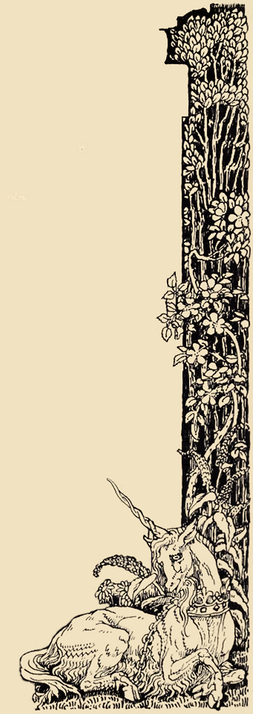
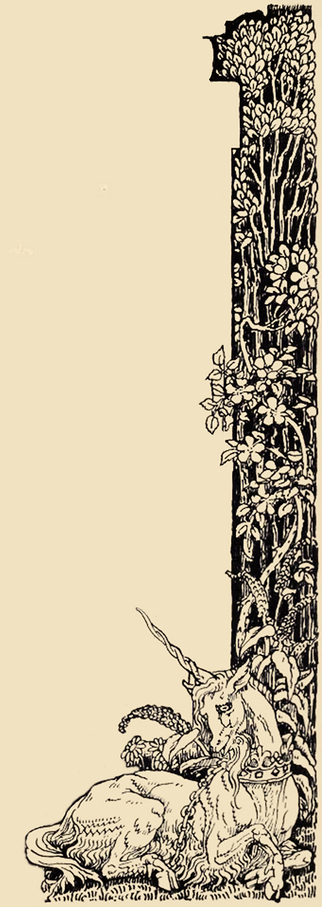

Parley is an unsolvable constructed MtG format.
Parley uses Vintage Magic Rules plus:
Players begin the game at peace. Any player may propose to end the peace at anytime. If all players agree, then the peace is ended.
If a player leaves the game during peace, then all players earn 0 game points for that game. Otherwise, players earn 3 game points for a win, 1 game point for a draw, and 0 game points for a loss.
Players may examine their opponent's deck before each game.
The first part of a Parley game involves setting up positions and then barganing over the strength of those positions. Once both players agree that they have a
reasonable chance of winning, then they end the peace and try to win.
Instead of copying the strongest netdeck players are incentivized to build
decks with novel combos and interactions. A good strategy is to create a board positions that are much stronger than they appear.
Parley is a constructed Magic format where every card is playable.
Parley uses Vintage Magic Rules plus the rules:
Players begin the game at peace. At any time a player may propose to end the peace, if all players accept, then the peace is ended.
If a player leaves the game during peace, then all players earn 0 game points for that game. Otherwise, players earn 3 game points for a win, 1 game point for a draw, and 0 game points for a loss.
Players may examine their opponent's deck before each game.